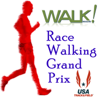

|
|
 |
The USA 15km
Race Walking Championships is part of the
USA
Race Walking Grand Prix, a season long competition combining results from 13
different competitions, across a range of distances from 1 mile to 50km. |
Health Notice |
Weather can be hot and humid and dehydration is a
danger. Please hydrate properly prior to, during and after the race.
Water and electrolyte replacement sports drink will be available on the
course for all participants. 15km athletes may bring their own
food/hydration for consumption during the race - bring a small sign to
identify your stuff. |
Packet Pickup
|
At the event hotel on Saturday
August 14 from 4-7pm
At the starting line 6am-6:15am. |
Registration
|
Pre-Register by August 6, 2010 by filling out this
form printing out
a copy and mailing it with your check to
Twin Cities Race Walkers
638 Summit Ave.
Saint Paul, MN 55105-3435
On-Site Registration: at the event
hotel on Saturday August 14 from 4-7pm.
Race-Day Registration: Not Available |
Things to Do
|
Maybe these are just what you need to bring that non-race-walker in
your life out to an event! The
event hotel
is located in a trendy section of Minneapolis, with a variety of small
restaurants and shops within easy walking distance.
A short light rail ride away:
For more information on the greater Twin Cities area, try
Minneapolis.org, or
Saint Paul Convention & Visitor's
Bureau. For information on greater Minnesota, try
Explore Minnesota.
|
When
|
August 15, 2010 - Events start promptly at 6:30am. |
Who is Who
|
Race Director
|
Bruce Leasure Twin Cities Race Walkers
651-330-9355
email: info "at" twincitiesracewalkers.org |
|
Elite Athlete Coordinator |
Dave Daubert
Twin Cities Race Walkers
952-446-9321
email: tonkatails "at" aol.com |
|